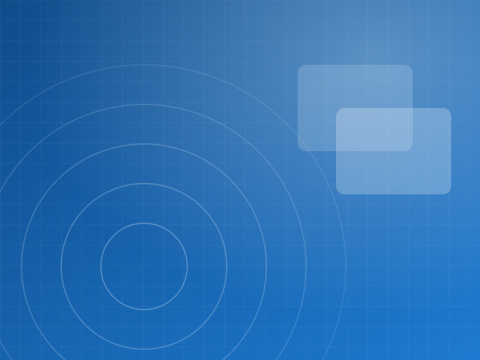
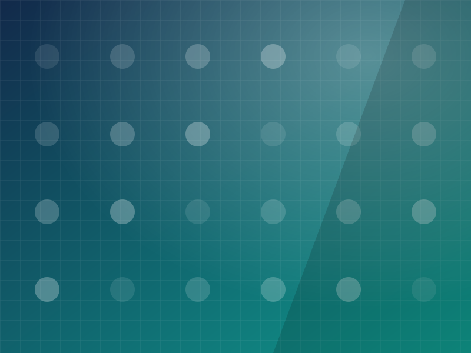
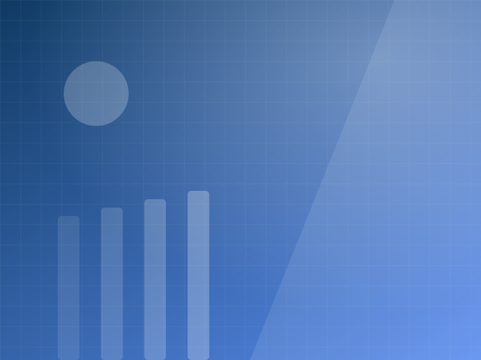
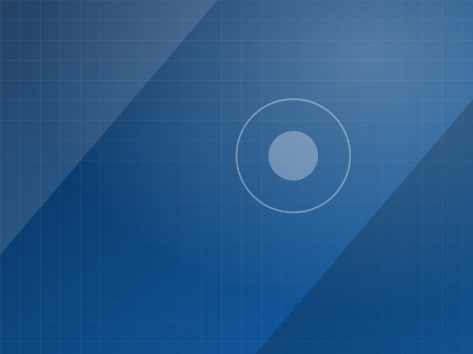
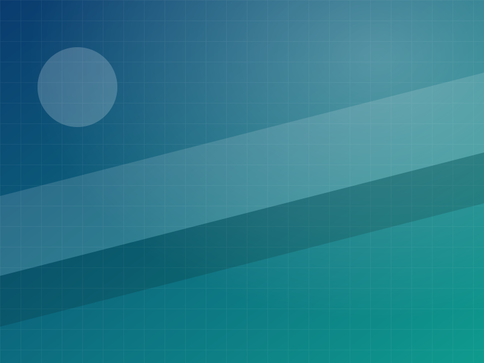

文字报道

学院教学成果专题报道
以系列通讯形式呈现学院阶段性教学与实践成果，兼顾专业性与可读性。
示例作品文字 · 约 3000 字
文字、影像与设计，是部门工作的三种主要产出。本页以分类方式汇总部门作品，点击分类即可筛选。
配图均为本站自动生成的抽象图形，用于演示版式。请替换为部门拥有版权的真实作品图，并确认已获得作者与出镜人同意。

以系列通讯形式呈现学院阶段性教学与实践成果，兼顾专业性与可读性。

记录展览现场的空间、作品与观众互动，按展区顺序编排为可浏览的图集。

用快节奏剪辑呈现学院一日的空间与人物，适合在短视频平台分发。

围绕活动主题建立视觉基调，输出主海报与延展物料，保证线上线下一致。

通过深度访谈呈现创作者的方法与思考，让作品背后的人被看见。

以建筑摄影的视角记录学院空间的材质、结构与光影变化。

对活动流程做结构化剪辑，保留关键节点与现场情绪，作为总结材料留档。

建立可复用的封面模板与配色规则，降低日常排版成本并统一品牌观感。
以网格系统组织图文信息，兼顾纸质印刷与屏幕阅读两种使用场景。
如需为作品添加独立详情页或外链（例如公众号文章、视频平台链接），可在每张卡片内加入链接，具体做法见仓库 README 的"扩展指引"。